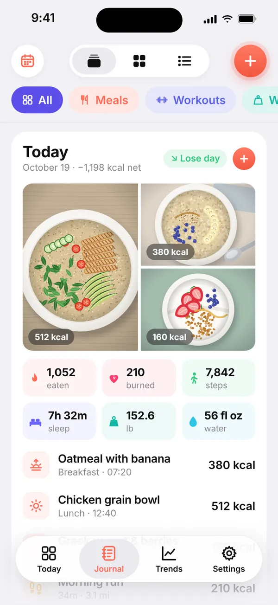
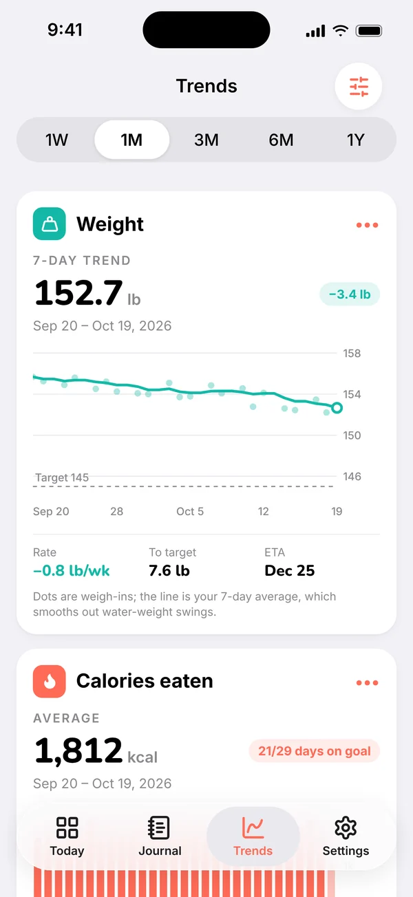
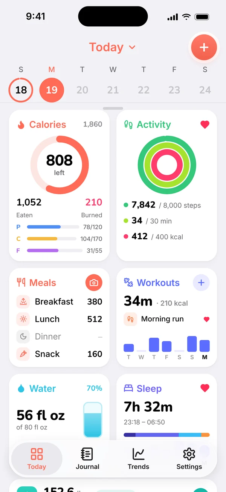
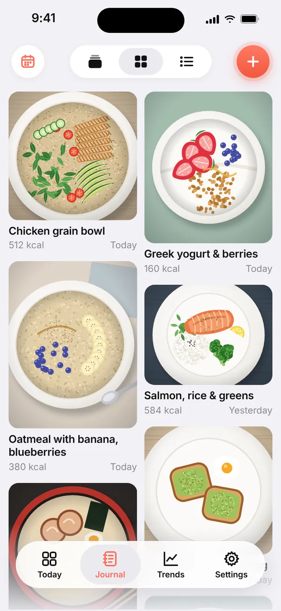
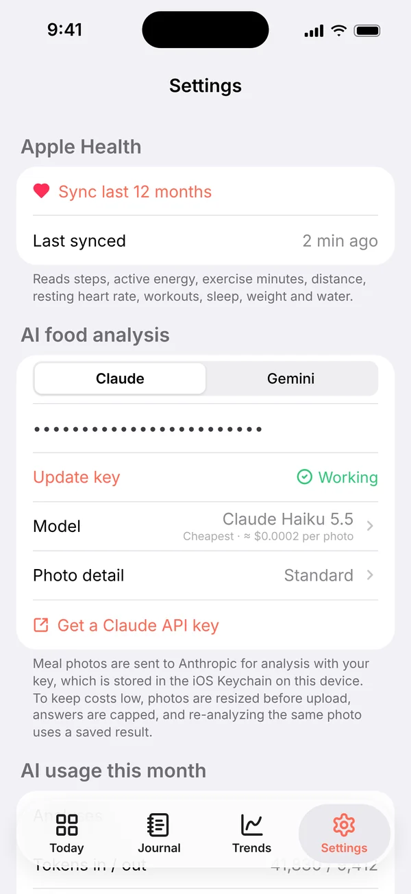

健康健美
轻记
拍下这一餐，
看清这一天。
轻记把热量和三大营养素、运动、步数、饮水、睡眠和体重放在同一个“今天”页面。大部分数据由 Apple 健康自动填好；拍下这一餐，AI 就估算出盘子里有什么。“趋势”页再把体重平滑成 7 天均线，告诉你真实走向和到达目标的预计日期。



功能亮点
专注一件事，
把它做好。
01今天
一整天，一屏看全。
还剩多少热量，以及蛋白质、碳水和脂肪；步数、锻炼和活动能量三环；餐食、运动、饮水和睡眠，最后是最近一次称重。左右滑动周日期条，或下拉打开月历，就能查看任意一天；点开卡片看完整详情。
- 运动消耗可计入当天的热量预算
- 步数、运动和睡眠来自 Apple 健康
- 一下点击，记一杯水
02日志
拍下一餐，AI 帮你记。
拍张照片，或者用文字描述吃了什么，AI 就识别出每样食物，估算热量、蛋白质、碳水和脂肪，你确认后再保存。所有记录都进入“日志”：每一餐、每次运动、每次称重和每晚睡眠按时间排好，并标明来源。每天一张卡片：当天的餐食照片、净热量，以及“减重日”“持平日”或“增重日”。
- 拍照或打字都行，“两个鸡蛋、吐司、黑咖啡”也可以
- 筛选、搜索、跳到某天，滑动即可编辑或删除
- “健康”“AI”“导入”标签标明每条记录的来源

03照片
每一餐，都在照片墙上。
把“日志”切换到“照片”，你拍过的每一餐排成两列瀑布流，每张照片保持原本的比例，配上名称、热量和日期。更喜欢一行一行看？点一下就回到“列表”。
- 搜索能翻到几周前的某道菜
- 点一张照片，就能打开并编辑这一餐
- 按天、照片或列表——日志会记住你的选择
04趋势
看穿每天的起伏。
体重放在最前面：每次称重是一个点，7 天均线抹平水分带来的波动，再加上目标线、每周变化速度和预计达成日期。下面是一周、一个月或一年的热量、营养素、活动能量、步数、运动、睡眠、饮水和静息心率。
- 像 Apple 健康一样，拖动图表查看任意一天
- 长按卡片调整顺序，不关心的可以隐藏
- 1 周、1 月、3 月、6 月和 1 年

05你的 AI，你的密钥
AI 怎么用、花多少，你说了算。
选择 Claude 或 Gemini，粘贴你自己的 API 密钥；密钥保存在 iPhone 的钥匙串里，测试密钥不花钱。照片上传前会先缩小，回答尽量简短，同一张照片不会重复分析，所以一餐的费用不到一美分。“设置”里能看到本月的分析次数和预估花费。
- 默认使用够用且最便宜的模型
- 照片直接从你的 iPhone 发给你选择的服务商
- 没有密钥？手动记录餐食，其他功能照常使用
按你的情况定计划
首次设置会问你的身高、年龄、活动量和目标（减重、保持或增重，以及每周速度），再为你算出热量、营养素、饮水、步数和运动目标。
带上以前的数据
导入 CSV，或直接粘贴从 Google 表格复制的单元格。中英文表头都能识别，保存前先统计重复项，每次导入都可以撤销。
数据只在你的 iPhone 上
无需账号，不用注册。你记录的一切都留在手机上；Apple 健康只读取，从不写入。
详细信息
- 类别
- 健康健美
- 系统要求
- iOS 17 或更高版本；搭配 Apple 健康效果最佳。AI 识别餐食照片需要你自己的 Claude 或 Gemini API 密钥。营养数值为估算，不构成医疗建议。
- 开发者
- 4M Studio
- 网站语言
- English · 中文